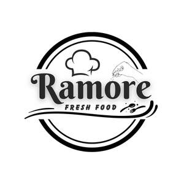

Trade Mark Journal No.2025/025 20 June 2025
UK00004214244 5 June 2025 (29,30,35,41,43)

- Class 29
- Prepared meat products, including burger patties and salsiccia-type sausages, cooked or semi-cooked, intended for direct consumption or commercial sale in packaged form; Fried potatoes, plain or topped with ingredients such as guanciale, parmesan, garlic sauce, or parsley, ready-to-eat or packaged for retail sale; Cooked eggs, particularly for inclusion in burger-style preparations or sandwiches; Prepared meat products, including burger patties and salsiccia-type sausages, cooked or semi-cooked, intended for direct consumption or commercial sale in packaged form; Fried potatoes, plain or topped with ingredients such as guanciale, parmesan, garlic sauce or parsley, ready-to-eat or packaged for retail sale; Cooked eggs, particularly for inclusion in burger-style preparations or sandwiches; Prepared meals consisting primarily of meat, eggs and vegetables, for immediate consumption or sale under own brand in packaged form.
- Class 30
- Prepared meals consisting primarily of bread and meat, namely hamburgers and cheeseburgers, including variants with egg and salsiccia; Buns and bread for hamburgers; Sauces and condiments for burgers and fries, including garlic sauce, mayonnaise, mustard and ketchup; Seasonings and toppings for fries, including grated cheese, parmesan, parsley and guanciale; Sandwiches; Ready-to-eat fast-food meals consisting primarily of bread, meat and condiments.
- Class 35
- Business advisory services relating to franchising; Business assistance relating to the establishment of franchises; Franchising services providing business assistance; Franchising services providing marketing assistance; Business management assistance in the establishment and operation of restaurants; Administration of the business affairs of franchises; Business management and consultancy services relating to franchising; Franchise services, namely assistance in business management within the framework of a franchise agreement; Advertising and marketing services in the field of food and beverage services; Business consultancy in connection with the operation of restaurants and fast-food outlets.
- Class 41
- Education services relating to business franchise management; Training services relating to the operation of restaurants and fast-food outlets; Providing of training for franchisees in the food and beverage sector; Practical training and workshops in the field of restaurant business development; Educational services relating to the implementation and management of franchise systems.
- Class 43
- Restaurant services; Fast-food restaurant services; Grill restaurant services; Bar services; Take-away food and drink services; Catering services; Restaurant services offering hamburgers with various toppings, including burgers with egg and salsiccia; Preparation and serving of fries with guanciale, parmesan, garlic sauce and parsley; Provision of specialty sauces as part of food service; Information and advisory services relating to the preparation and delivery of food and beverages.
IOSUB GICA-REMUS